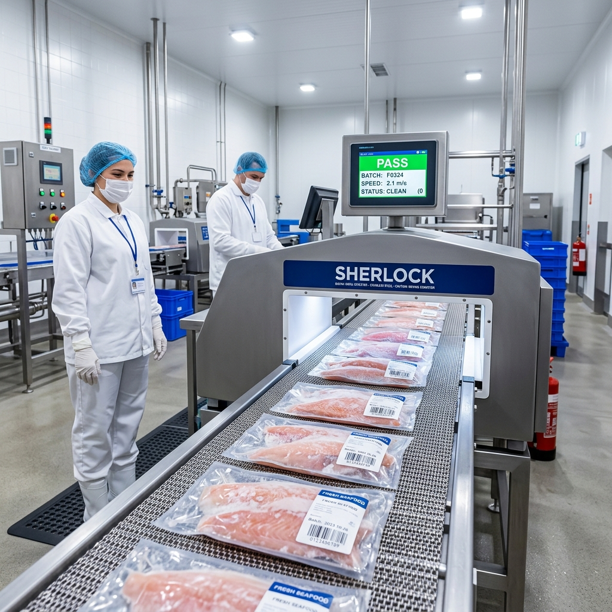

주력 기준 상품
주력 기준 상품
노르웨이 고등어
북대서양 제철 어획, 풍부한 유분과 고소한 맛으로 남녀노소 호불호 없는 기준 품목.
손질 형태순살 필렛 / 정량 토막
배식 규격100g~120g (급식), 150g (식당)
포장 단위개별 진공팩 / 5kg·10kg 벌크 박스
염지 옵션국내산 천일염 저염 자반 (약 0.8%)
어종과 손질 형태, 판매 규격을 확인하고 조리 목적에 맞는 제품을 찾아보세요.
주력 고등어의 안정적 공급과 함께 식단 다양화를 위한 최적의 가공 규격을 제안합니다.
생선구이 전문점의 화려한 통마리 상차림부터 단체급식소의 균일한 1인 배식 토막까지, 사업장별 최적의 솔루션을 제공합니다.

식당 손님상에 통째로 오르는 먹음직스러운 1인분 구이 비주얼. 매장 주방 사정에 맞춰 대가리·꼬리 절단 및 반토막 맞춤 가공을 지원합니다.

배식 편차와 가시 컴플레인을 원천 차단하는 균일 정량 컷. 콤비오븐 100~500인분 대량 조리 매뉴얼과 공공기관 납품 서류를 완비했습니다.
식단과 매장 환경에 맞춰 선택할 수 있는 3대 대표 어종의 가공 형태와 규격 요약입니다.
주력 기준 상품
북대서양 제철 어획, 풍부한 유분과 고소한 맛으로 남녀노소 호불호 없는 기준 품목.
 급식 선호도 1위
급식 선호도 1위
비린내가 적고 육질이 담백하여 학교 급식 및 조림·데리야끼구이에 선호도가 높은 어종.
 바삭한 껍질 별미
바삭한 껍질 별미
바삭한 껍질과 촉촉한 속살로 대형 구내식당 및 생선구이 전문점의 인기 메뉴.
처음 거래하시는 영양사님과 사장님을 위한 표준 발주 프로세스 및 납품 조건 안내입니다.

주방에서 생선을 씻고 뼈를 바르는 3D 업무는 이제 그만. 비가식부(내장·머리)를 100% 제거하고 영하 40℃로 급속 동결된 정량 필렛이 냉동 차폐 패키징되어 안전하게 입고됩니다.
필요하신 어종, 손질 형태(순살/토막), 1인 배식 중량 및 일일 예상 소진량을 확인합니다.
온라인 쇼핑몰(고래밥몰), 전화 또는 발주서 이메일을 통해 주문을 접수합니다. (당일 14시 마감)
HACCP 인증 제조 라인에서 맞춤 절단 및 -40℃ 급속동결 후 규격 박스에 정량 포장합니다.
전국 냉동 물류망을 통해 신선도를 유지한 상태로 지정하신 사업장 냉동고로 입고됩니다.
일반 식당 및 급식소용 벌크 5kg/10kg 박스 단위 출고를 기본으로 하며, 소량 테스트는 개별 팩으로 지원 가능합니다.
평일 14:00 이전 결제/발주 완료 건은 당일 출고되어 익일 수령 가능합니다. (도서산간 및 주말/공휴일 제외)
사업자 회원 가입 시 100% 전자세금계산서 발행이 지원되며, 정기 계약 거래처는 월말 결제 협의가 가능합니다.
자반고래밥은 단순 유통상이 아닌, 자체 위생 설비를 직접 가동하는 제조사입니다.
어획 즉시 급랭된 최상급 북대서양 및 국내산 원물을 정밀 검수 후 표면 세척합니다.

순살 필렛 전용 라인에서 숙련된 작업자와 탈골기가 대형 척추 뼈와 잔가시를 1차 제거합니다.

포장 직전 전 제품을 최신 디지털 금속검출기에 통과시켜 미세 낚싯바늘과 금속 이물을 차단합니다.
영하 40도 급속 동결로 해동 시 육즙 손실을 방지하고 표준 10kg/5kg 박스에 정량 포장합니다.
기관 제출에 필요한 필수 위생 증빙과 사업자 확인 서류를 한곳에서 다운로드하실 수 있습니다.
식품의약품안전처 위해요소중점관리기준 인증서 사본
공인기관 자가품질검사 결과서 (미생물·중금속 적합)
(주)자반 사업자등록증 및 식품제조가공업 영업신고증
노르웨이/국내산 원산지 증명원 및 급식 표준 제품 규격서
오븐 대량 조리부터 팬 구이, 조림까지 실패 없는 조리 매뉴얼과 짧은 영상 팁을 제공합니다.
조리 전날 냉장고(0~4℃)에서 12시간 자연해동하여 육즙 손실을 방지합니다.
오븐 팬에 종이호일을 깔고 껍질이 위를 향하게 2cm 간격으로 정렬합니다.
콤비모드(습도 20%) 200℃에서 스팀으로 속살을 부드럽게 익힙니다.
마지막 2분간 건열 모드로 수분을 날려 황금빛 바삭한 껍질을 완성합니다.

대형 솥 바닥에 도톰한 무와 삶은 시래기를 깔아 양념 눌어붙음을 방지합니다.
해동된 고등어·임연수 정량 토막을 겹치지 않게 고르게 얹습니다.
진간장, 고춧가루, 다진 마늘, 생강즙으로 배합한 조림 양념장을 끼얹습니다.
센 불로 끓인 후 중불에서 20분간 은근히 졸여 깊은 감칠맛을 냅니다.

키친타월로 표면 수분을 꼼꼼히 닦아 기름 튐과 눅눅함을 방지합니다.
생강술 밑간 후 전분과 튀김가루를 8:2 비율로 얇고 고르게 버무립니다.
175도 기름에서 3분 30초간 튀겨 겉은 파삭하고 속은 촉촉하게 완성합니다.

배식 직전 뜨거운 탕수 소스를 버무리거나 얹어 바삭함을 유지합니다.
복잡한 서류 없이 먼저 필요하신 조건만 가볍게 남겨주세요.
조리 매니저가 사업장 환경에 알맞은 규격 제안과 샘플 지원 절차를 안내해 드립니다.